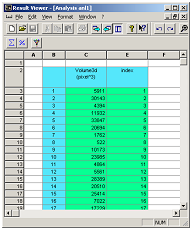

To follow this tutorial you should have read the first Quantification+ Option tutorial and be familiar with basic manipulation of Amira and the Quantification module (Getting started with Quantification+ Option).
You may want to skip image processing details in this example to focus on the specific new features introduced.
Throughout this tutorial you will find links to corresponding demo scripts.
In this document often the term "enter the command ..." or "apply the command ..." occure. This means that you have to attach a Quantification tool to the input data (defined in the text) and enter the command "..." in the Visilog command line (at the bottom right of the Quantification Properties section). It supports automatic completion. After pressing enter you can see the new command in the Pipeline Section of the Quantification Properties (in the left). Here you can change the input and output data/names (as described in the text). Then press apply.
Notice that sometimes it could happen that you accidentally delete the Visilog colormaps. This is the case, when you for example have a binary image an you attach an OrthoSlice to it and the viewer just shows a black image (see if the colormaps "VisilogBinary.col" and "VisilogLabels.col" are under Pool/ Show Object). The colormaps can be reset with the Tcl command (command line at the bottom right of the Amira window):
Quantification createColormaps
The 3D image used in this example was generated using data from several slices of foam.
This example illustrates the use of automatic segmentation to extract bubbles, in a more detailed way than the "getting started" example, and that can produce better segmentation results.
The aim of the example is to isolate and quantify these bubbles.
Here is the result of an automated segmentation based on the watershed algorithm, which can produce better segmentation than the binseparate command:
You can run this script (click the link in figure 114) or do the following steps manually.
You will find the sequence of used commands also in the share/demo/mousse/Mousse.scro
script file.
- Load data set data/images/Mousse/mousse.im6 from the Amira root directory.
- Calibration
- Attach a Quantification module to the data and apply the command currentcalibration with
parameter no_caliband choose yes as choice
If an image is not calibrated, the measurements will be done using this calibration. To get
measurements in pixels, we set the current calibration to no_calib.
- Thresholding
- Apply the command threshold to the data with a range
from 0 to 38.
This sets voxels with a value in the range between 0 and 38 as foreground and other
voxels as background in the resulting image.
- Fill holes
- To the result of the thresholding apply the command hole_fill
with parameter 3D_6.
hole_fill fills all holes inside a region.
- Separation by maximal distance
- To the result of hole_fill use the command distxxx with
parameter 1, 1.41, and 1.73.
distxxx calculates for all foreground voxels the distance of this voxel to the boundary of the region
it belongs to. - To the result apply merge_maxima with contrast factor 1.
merge_max subtracts the contrast factor from the input image and the regional maxima of the result are called
merged maxima. - To this result apply the command label.
label assigns each voxel of the same object the same number. Voxels from different objects get different numbers.
The numbers start with 1 and are continuous.
- Distance inversion
- Attach another Quantification module to the result of distxxx and apply logical_not.
This computes the logical not of the input image.
- Watershed and separate
- Use fastwatershed with the result of logical_not
as first input and the result of label as second input.
fastwatershed produces a binary image which contains the crest lines separating the labelled objects of
the input image. - To the result of hole_fill apply logical_sub with the result
of hole_fill as first input and the result of fastwatershed as second input.
- Labelisation
- Label the result with the command label.
- Filtrage
- Create a new filter filterVol3D with a Quantification module using createfilter with
the expression (Volume3d >= 500).
createfilter creates a filter according to the given formula. The filter can be used in further
commands. - Use this filter in a Quantification module attached to the result of Labelisation with the command
I_filter_image. Use the result of the Labelisation for both inputs and the parameter filterVol3D
and adjust.
I_filter_image applies the filter to the input image and creates a filtered image.
- Create analyse
- Use a Quantification module to create a measure group Vol3D with the command addmeasuretogroup
and parameter Volume3d.
addmeasuretogroup allows to change measure groups without using the measure group editor. - Create an analyze with a Quantification module attached to the result of I_filter_image and the
command I_analyze with parameter adjust and Vol3D.
The following steps are just for further interest, however the results are not necessary for the tutorial.
- Create boundary for display
- Attach a Quantification module to the result of the last step and use erode with structure size 1.
erode computes an erosion on the input image with the given structure size. - Attach another Quantification module to the result of I_filter_image and apply subtract
with the result of I_filter_image as first input and the result of erode as second input.
- Attach a Quantification module to the last result and run convert with format label.
This converts an image in the format given in the parameters. A conversion to a binary image sets all values not equal to
zero to one and zero values stay the same.
You can then, for instance, measure the volume for each individual region.
- Attach a Quantification-Analyse module to the result of the filtrage step by right clicking on
the image icon and selecting Quantification-Analyse from the Measure submenu in the popup menu.
You will see then the Visilog analysis Result Viewer.

Figure 115:
Measurement results: Individual analysis with volume for each region.
- In the interaction mode you can move the dragger. If you release the dragger on a bubble, the row corresponding to this bubble is highlighted in the Result viewer. You can also click on a cell (not a row or column) in the Result viewer and the position of the dragger is highlighted.
Finally, you can reconstruct the geometry of the bubbles.
- Attach a SurfaceGen module to the Result image icon by right clicking on it and selecting SurfaceGen from the Compute submenu in the popup menu.
- Select a smoothing mode and press Apply in the properties of the module SurfaceGen to create a surface.
As the result image already contains integer values for material labels, it can be used directly for surface reconstruction. Other image types may require conversion to Amira label data (for instance by using the CastField module).
Notice that the SurfaceGen module can work with more than 256 labels.
- After reconstruction, you can display the resulting surface with a SurfaceView module. However, notice that the resulting surface contains a large number of polygons and may require prior simplification for faster display on your hardware.
Amira also allows you to export the surfaces to various file formats, or to generate and export a tetrahedral model suitable, for instance, for finite element simulation with some external solver.
{kind=link}
{kind=link}
{kind=link}